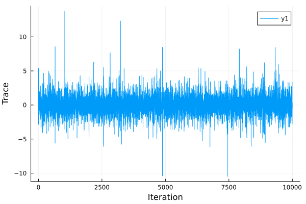

General Usage
This package implements the AbstractMCMC interface. AbstractMCMC provides a unifying interface for MCMC algorithms applied to LogDensityProblems.
Examples
Drawing Samples From a LogDensityProblems Through AbstractMCMC
SliceSampling.jl implements the AbstractMCMC interface through LogDensityProblems. That is, one simply needs to define a LogDensityProblems and pass it to AbstractMCMC:
using AbstractMCMC
using Distributions
using LinearAlgebra
using LogDensityProblems
using Plots
using SliceSampling
struct Target{D}
dist::D
end
LogDensityProblems.logdensity(target::Target, x) = logpdf(target.dist, x)
LogDensityProblems.dimension(target::Target) = length(target.distx)
LogDensityProblems.capabilities(::Type{<:Target}) = LogDensityProblems.LogDensityOrder{0}()
sampler = GibbsPolarSlice(2.0)
n_samples = 10000
model = Target(MvTDist(5, zeros(10), Matrix(I, 10, 10)))
logdensitymodel = AbstractMCMC.LogDensityModel(model)
chain = sample(logdensitymodel, sampler, n_samples; initial_params=randn(10))
samples = hcat([transition.params for transition in chain]...)
plot(samples[1,:], xlabel="Iteration", ylabel="Trace")
savefig("abstractmcmc_demo.svg")"/home/runner/work/SliceSampling.jl/SliceSampling.jl/docs/build/abstractmcmc_demo.svg"
Drawing Samples From Turing Models
SliceSampling.jl can also be used to sample from Turing models through Turing's externalsampler interface:
using Distributions
using Turing
using SliceSampling
@model function demo()
s ~ InverseGamma(3, 3)
m ~ Normal(0, sqrt(s))
end
sampler = RandPermGibbs(SliceSteppingOut(2.))
n_samples = 10000
model = demo()
chain = sample(model, externalsampler(sampler), n_samples)
describe(chain)Sampling 0%| | ETA: N/A
Sampling 0%|▎ | ETA: 0:15:56
Sampling 1%|▍ | ETA: 0:07:56
Sampling 2%|▋ | ETA: 0:05:16
Sampling 2%|▉ | ETA: 0:03:56
Sampling 2%|█ | ETA: 0:03:07
Sampling 3%|█▎ | ETA: 0:02:35
Sampling 4%|█▌ | ETA: 0:02:13
Sampling 4%|█▋ | ETA: 0:01:55
Sampling 4%|█▉ | ETA: 0:01:42
Sampling 5%|██▏ | ETA: 0:01:31
Sampling 6%|██▎ | ETA: 0:01:23
Sampling 6%|██▌ | ETA: 0:01:15
Sampling 6%|██▊ | ETA: 0:01:09
Sampling 7%|███ | ETA: 0:01:04
Sampling 8%|███▏ | ETA: 0:00:59
Sampling 8%|███▍ | ETA: 0:00:55
Sampling 8%|███▋ | ETA: 0:00:52
Sampling 9%|███▊ | ETA: 0:00:49
Sampling 10%|████ | ETA: 0:00:46
Sampling 10%|████▎ | ETA: 0:00:43
Sampling 10%|████▍ | ETA: 0:00:41
Sampling 11%|████▋ | ETA: 0:00:39
Sampling 12%|████▉ | ETA: 0:00:37
Sampling 12%|█████ | ETA: 0:00:35
Sampling 12%|█████▎ | ETA: 0:00:34
Sampling 13%|█████▌ | ETA: 0:00:32
Sampling 14%|█████▋ | ETA: 0:00:31
Sampling 14%|█████▉ | ETA: 0:00:30
Sampling 14%|██████▏ | ETA: 0:00:29
Sampling 15%|██████▎ | ETA: 0:00:27
Sampling 16%|██████▌ | ETA: 0:00:26
Sampling 16%|██████▊ | ETA: 0:00:25
Sampling 16%|██████▉ | ETA: 0:00:25
Sampling 17%|███████▏ | ETA: 0:00:24
Sampling 18%|███████▍ | ETA: 0:00:23
Sampling 18%|███████▌ | ETA: 0:00:22
Sampling 18%|███████▊ | ETA: 0:00:21
Sampling 19%|████████ | ETA: 0:00:21
Sampling 20%|████████▎ | ETA: 0:00:20
Sampling 20%|████████▍ | ETA: 0:00:19
Sampling 20%|████████▋ | ETA: 0:00:19
Sampling 21%|████████▉ | ETA: 0:00:18
Sampling 22%|█████████ | ETA: 0:00:18
Sampling 22%|█████████▎ | ETA: 0:00:17
Sampling 22%|█████████▌ | ETA: 0:00:17
Sampling 23%|█████████▋ | ETA: 0:00:16
Sampling 24%|█████████▉ | ETA: 0:00:16
Sampling 24%|██████████▏ | ETA: 0:00:15
Sampling 24%|██████████▎ | ETA: 0:00:15
Sampling 25%|██████████▌ | ETA: 0:00:15
Sampling 26%|██████████▊ | ETA: 0:00:14
Sampling 26%|██████████▉ | ETA: 0:00:14
Sampling 26%|███████████▏ | ETA: 0:00:14
Sampling 27%|███████████▍ | ETA: 0:00:13
Sampling 28%|███████████▌ | ETA: 0:00:13
Sampling 28%|███████████▊ | ETA: 0:00:13
Sampling 28%|████████████ | ETA: 0:00:12
Sampling 29%|████████████▏ | ETA: 0:00:12
Sampling 30%|████████████▍ | ETA: 0:00:12
Sampling 30%|████████████▋ | ETA: 0:00:11
Sampling 30%|████████████▊ | ETA: 0:00:11
Sampling 31%|█████████████ | ETA: 0:00:11
Sampling 32%|█████████████▎ | ETA: 0:00:11
Sampling 32%|█████████████▌ | ETA: 0:00:10
Sampling 32%|█████████████▋ | ETA: 0:00:10
Sampling 33%|█████████████▉ | ETA: 0:00:10
Sampling 34%|██████████████▏ | ETA: 0:00:10
Sampling 34%|██████████████▎ | ETA: 0:00:10
Sampling 34%|██████████████▌ | ETA: 0:00:09
Sampling 35%|██████████████▊ | ETA: 0:00:09
Sampling 36%|██████████████▉ | ETA: 0:00:09
Sampling 36%|███████████████▏ | ETA: 0:00:09
Sampling 36%|███████████████▍ | ETA: 0:00:09
Sampling 37%|███████████████▌ | ETA: 0:00:08
Sampling 38%|███████████████▊ | ETA: 0:00:08
Sampling 38%|████████████████ | ETA: 0:00:08
Sampling 38%|████████████████▏ | ETA: 0:00:08
Sampling 39%|████████████████▍ | ETA: 0:00:08
Sampling 40%|████████████████▋ | ETA: 0:00:08
Sampling 40%|████████████████▊ | ETA: 0:00:07
Sampling 40%|█████████████████ | ETA: 0:00:07
Sampling 41%|█████████████████▎ | ETA: 0:00:07
Sampling 42%|█████████████████▍ | ETA: 0:00:07
Sampling 42%|█████████████████▋ | ETA: 0:00:07
Sampling 42%|█████████████████▉ | ETA: 0:00:07
Sampling 43%|██████████████████ | ETA: 0:00:07
Sampling 44%|██████████████████▎ | ETA: 0:00:06
Sampling 44%|██████████████████▌ | ETA: 0:00:06
Sampling 44%|██████████████████▊ | ETA: 0:00:06
Sampling 45%|██████████████████▉ | ETA: 0:00:06
Sampling 46%|███████████████████▏ | ETA: 0:00:06
Sampling 46%|███████████████████▍ | ETA: 0:00:06
Sampling 46%|███████████████████▌ | ETA: 0:00:06
Sampling 47%|███████████████████▊ | ETA: 0:00:06
Sampling 48%|████████████████████ | ETA: 0:00:05
Sampling 48%|████████████████████▏ | ETA: 0:00:05
Sampling 48%|████████████████████▍ | ETA: 0:00:05
Sampling 49%|████████████████████▋ | ETA: 0:00:05
Sampling 50%|████████████████████▊ | ETA: 0:00:05
Sampling 50%|█████████████████████ | ETA: 0:00:05
Sampling 50%|█████████████████████▎ | ETA: 0:00:05
Sampling 51%|█████████████████████▍ | ETA: 0:00:05
Sampling 52%|█████████████████████▋ | ETA: 0:00:05
Sampling 52%|█████████████████████▉ | ETA: 0:00:05
Sampling 52%|██████████████████████ | ETA: 0:00:05
Sampling 53%|██████████████████████▎ | ETA: 0:00:04
Sampling 54%|██████████████████████▌ | ETA: 0:00:04
Sampling 54%|██████████████████████▋ | ETA: 0:00:04
Sampling 55%|██████████████████████▉ | ETA: 0:00:04
Sampling 55%|███████████████████████▏ | ETA: 0:00:04
Sampling 56%|███████████████████████▎ | ETA: 0:00:04
Sampling 56%|███████████████████████▌ | ETA: 0:00:04
Sampling 56%|███████████████████████▊ | ETA: 0:00:04
Sampling 57%|████████████████████████ | ETA: 0:00:04
Sampling 57%|████████████████████████▏ | ETA: 0:00:04
Sampling 58%|████████████████████████▍ | ETA: 0:00:04
Sampling 58%|████████████████████████▋ | ETA: 0:00:04
Sampling 59%|████████████████████████▊ | ETA: 0:00:03
Sampling 60%|█████████████████████████ | ETA: 0:00:03
Sampling 60%|█████████████████████████▎ | ETA: 0:00:03
Sampling 60%|█████████████████████████▍ | ETA: 0:00:03
Sampling 61%|█████████████████████████▋ | ETA: 0:00:03
Sampling 62%|█████████████████████████▉ | ETA: 0:00:03
Sampling 62%|██████████████████████████ | ETA: 0:00:03
Sampling 62%|██████████████████████████▎ | ETA: 0:00:03
Sampling 63%|██████████████████████████▌ | ETA: 0:00:03
Sampling 64%|██████████████████████████▋ | ETA: 0:00:03
Sampling 64%|██████████████████████████▉ | ETA: 0:00:03
Sampling 64%|███████████████████████████▏ | ETA: 0:00:03
Sampling 65%|███████████████████████████▎ | ETA: 0:00:03
Sampling 66%|███████████████████████████▌ | ETA: 0:00:03
Sampling 66%|███████████████████████████▊ | ETA: 0:00:03
Sampling 66%|███████████████████████████▉ | ETA: 0:00:03
Sampling 67%|████████████████████████████▏ | ETA: 0:00:02
Sampling 68%|████████████████████████████▍ | ETA: 0:00:02
Sampling 68%|████████████████████████████▌ | ETA: 0:00:02
Sampling 68%|████████████████████████████▊ | ETA: 0:00:02
Sampling 69%|█████████████████████████████ | ETA: 0:00:02
Sampling 70%|█████████████████████████████▎ | ETA: 0:00:02
Sampling 70%|█████████████████████████████▍ | ETA: 0:00:02
Sampling 70%|█████████████████████████████▋ | ETA: 0:00:02
Sampling 71%|█████████████████████████████▉ | ETA: 0:00:02
Sampling 72%|██████████████████████████████ | ETA: 0:00:02
Sampling 72%|██████████████████████████████▎ | ETA: 0:00:02
Sampling 72%|██████████████████████████████▌ | ETA: 0:00:02
Sampling 73%|██████████████████████████████▋ | ETA: 0:00:02
Sampling 74%|██████████████████████████████▉ | ETA: 0:00:02
Sampling 74%|███████████████████████████████▏ | ETA: 0:00:02
Sampling 74%|███████████████████████████████▎ | ETA: 0:00:02
Sampling 75%|███████████████████████████████▌ | ETA: 0:00:02
Sampling 76%|███████████████████████████████▊ | ETA: 0:00:02
Sampling 76%|███████████████████████████████▉ | ETA: 0:00:02
Sampling 76%|████████████████████████████████▏ | ETA: 0:00:02
Sampling 77%|████████████████████████████████▍ | ETA: 0:00:02
Sampling 78%|████████████████████████████████▌ | ETA: 0:00:01
Sampling 78%|████████████████████████████████▊ | ETA: 0:00:01
Sampling 78%|█████████████████████████████████ | ETA: 0:00:01
Sampling 79%|█████████████████████████████████▏ | ETA: 0:00:01
Sampling 80%|█████████████████████████████████▍ | ETA: 0:00:01
Sampling 80%|█████████████████████████████████▋ | ETA: 0:00:01
Sampling 80%|█████████████████████████████████▊ | ETA: 0:00:01
Sampling 81%|██████████████████████████████████ | ETA: 0:00:01
Sampling 82%|██████████████████████████████████▎ | ETA: 0:00:01
Sampling 82%|██████████████████████████████████▌ | ETA: 0:00:01
Sampling 82%|██████████████████████████████████▋ | ETA: 0:00:01
Sampling 83%|██████████████████████████████████▉ | ETA: 0:00:01
Sampling 84%|███████████████████████████████████▏ | ETA: 0:00:01
Sampling 84%|███████████████████████████████████▎ | ETA: 0:00:01
Sampling 84%|███████████████████████████████████▌ | ETA: 0:00:01
Sampling 85%|███████████████████████████████████▊ | ETA: 0:00:01
Sampling 86%|███████████████████████████████████▉ | ETA: 0:00:01
Sampling 86%|████████████████████████████████████▏ | ETA: 0:00:01
Sampling 86%|████████████████████████████████████▍ | ETA: 0:00:01
Sampling 87%|████████████████████████████████████▌ | ETA: 0:00:01
Sampling 88%|████████████████████████████████████▊ | ETA: 0:00:01
Sampling 88%|█████████████████████████████████████ | ETA: 0:00:01
Sampling 88%|█████████████████████████████████████▏ | ETA: 0:00:01
Sampling 89%|█████████████████████████████████████▍ | ETA: 0:00:01
Sampling 90%|█████████████████████████████████████▋ | ETA: 0:00:01
Sampling 90%|█████████████████████████████████████▊ | ETA: 0:00:01
Sampling 90%|██████████████████████████████████████ | ETA: 0:00:01
Sampling 91%|██████████████████████████████████████▎ | ETA: 0:00:01
Sampling 92%|██████████████████████████████████████▍ | ETA: 0:00:00
Sampling 92%|██████████████████████████████████████▋ | ETA: 0:00:00
Sampling 92%|██████████████████████████████████████▉ | ETA: 0:00:00
Sampling 93%|███████████████████████████████████████ | ETA: 0:00:00
Sampling 94%|███████████████████████████████████████▎ | ETA: 0:00:00
Sampling 94%|███████████████████████████████████████▌ | ETA: 0:00:00
Sampling 94%|███████████████████████████████████████▊ | ETA: 0:00:00
Sampling 95%|███████████████████████████████████████▉ | ETA: 0:00:00
Sampling 96%|████████████████████████████████████████▏ | ETA: 0:00:00
Sampling 96%|████████████████████████████████████████▍ | ETA: 0:00:00
Sampling 96%|████████████████████████████████████████▌ | ETA: 0:00:00
Sampling 97%|████████████████████████████████████████▊ | ETA: 0:00:00
Sampling 98%|█████████████████████████████████████████ | ETA: 0:00:00
Sampling 98%|█████████████████████████████████████████▏| ETA: 0:00:00
Sampling 98%|█████████████████████████████████████████▍| ETA: 0:00:00
Sampling 99%|█████████████████████████████████████████▋| ETA: 0:00:00
Sampling 100%|█████████████████████████████████████████▊| ETA: 0:00:00
Sampling 100%|██████████████████████████████████████████| Time: 0:00:05
Sampling 100%|██████████████████████████████████████████| Time: 0:00:05
Chains MCMC chain (10000×3×1 Array{Float64, 3}):
Iterations = 1:1:10000
Number of chains = 1
Samples per chain = 10000
Wall duration = 5.67 seconds
Compute duration = 5.67 seconds
parameters = s, m
internals = lp
Summary Statistics
parameters mean std mcse ess_bulk ess_tail rhat ess_per_sec
Symbol Float64 Float64 Float64 Float64 Float64 Float64 Float64
s 1.4913 1.4810 0.0211 5486.2033 5377.7341 1.0003 967.5844
m 0.0208 1.2488 0.0132 9186.8451 5204.8478 1.0003 1620.2549
Quantiles
parameters 2.5% 25.0% 50.0% 75.0% 97.5%
Symbol Float64 Float64 Float64 Float64 Float64
s 0.4168 0.7721 1.1277 1.7387 4.6722
m -2.4751 -0.7028 0.0061 0.7527 2.5410Conditional sampling in a Turing.Gibbs sampler
SliceSampling.jl be used as a conditional sampler in Turing.Gibbs.
using Distributions
using Turing
using SliceSampling
@model function simple_choice(xs)
p ~ Beta(2, 2)
z ~ Bernoulli(p)
for i in 1:length(xs)
if z == 1
xs[i] ~ Normal(0, 1)
else
xs[i] ~ Normal(2, 1)
end
end
end
sampler = Turing.Gibbs(
:p => externalsampler(SliceSteppingOut(2.0)),
:z => PG(20),
)
n_samples = 1000
model = simple_choice([1.5, 2.0, 0.3])
chain = sample(model, sampler, n_samples)
describe(chain)Sampling 0%| | ETA: N/A
Sampling 0%|▎ | ETA: 1:08:52
Sampling 1%|▍ | ETA: 0:34:20
Sampling 2%|▋ | ETA: 0:23:10
Sampling 2%|▉ | ETA: 0:17:20
Sampling 2%|█ | ETA: 0:13:48
Sampling 3%|█▎ | ETA: 0:11:27
Sampling 4%|█▌ | ETA: 0:09:47
Sampling 4%|█▋ | ETA: 0:08:31
Sampling 4%|█▉ | ETA: 0:07:33
Sampling 5%|██▏ | ETA: 0:06:46
Sampling 6%|██▎ | ETA: 0:06:07
Sampling 6%|██▌ | ETA: 0:05:35
Sampling 6%|██▊ | ETA: 0:05:08
Sampling 7%|███ | ETA: 0:04:44
Sampling 8%|███▏ | ETA: 0:04:24
Sampling 8%|███▍ | ETA: 0:04:07
Sampling 8%|███▋ | ETA: 0:03:51
Sampling 9%|███▊ | ETA: 0:03:37
Sampling 10%|████ | ETA: 0:03:25
Sampling 10%|████▎ | ETA: 0:03:14
Sampling 10%|████▍ | ETA: 0:03:04
Sampling 11%|████▋ | ETA: 0:02:54
Sampling 12%|████▉ | ETA: 0:02:46
Sampling 12%|█████ | ETA: 0:02:38
Sampling 12%|█████▎ | ETA: 0:02:31
Sampling 13%|█████▌ | ETA: 0:02:25
Sampling 14%|█████▋ | ETA: 0:02:19
Sampling 14%|█████▉ | ETA: 0:02:13
Sampling 14%|██████▏ | ETA: 0:02:08
Sampling 15%|██████▎ | ETA: 0:02:03
Sampling 16%|██████▌ | ETA: 0:01:58
Sampling 16%|██████▊ | ETA: 0:01:54
Sampling 16%|██████▉ | ETA: 0:01:50
Sampling 17%|███████▏ | ETA: 0:01:46
Sampling 18%|███████▍ | ETA: 0:01:43
Sampling 18%|███████▌ | ETA: 0:01:39
Sampling 18%|███████▊ | ETA: 0:01:36
Sampling 19%|████████ | ETA: 0:01:33
Sampling 20%|████████▎ | ETA: 0:01:30
Sampling 20%|████████▍ | ETA: 0:01:28
Sampling 20%|████████▋ | ETA: 0:01:25
Sampling 21%|████████▉ | ETA: 0:01:23
Sampling 22%|█████████ | ETA: 0:01:20
Sampling 22%|█████████▎ | ETA: 0:01:18
Sampling 22%|█████████▌ | ETA: 0:01:16
Sampling 23%|█████████▋ | ETA: 0:01:14
Sampling 24%|█████████▉ | ETA: 0:01:12
Sampling 24%|██████████▏ | ETA: 0:01:10
Sampling 24%|██████████▎ | ETA: 0:01:08
Sampling 25%|██████████▌ | ETA: 0:01:06
Sampling 26%|██████████▊ | ETA: 0:01:05
Sampling 26%|██████████▉ | ETA: 0:01:03
Sampling 26%|███████████▏ | ETA: 0:01:02
Sampling 27%|███████████▍ | ETA: 0:01:00
Sampling 28%|███████████▌ | ETA: 0:00:59
Sampling 28%|███████████▊ | ETA: 0:00:57
Sampling 28%|████████████ | ETA: 0:00:56
Sampling 29%|████████████▏ | ETA: 0:00:55
Sampling 30%|████████████▍ | ETA: 0:00:53
Sampling 30%|████████████▋ | ETA: 0:00:52
Sampling 30%|████████████▊ | ETA: 0:00:51
Sampling 31%|█████████████ | ETA: 0:00:50
Sampling 32%|█████████████▎ | ETA: 0:00:49
Sampling 32%|█████████████▌ | ETA: 0:00:48
Sampling 32%|█████████████▋ | ETA: 0:00:47
Sampling 33%|█████████████▉ | ETA: 0:00:46
Sampling 34%|██████████████▏ | ETA: 0:00:45
Sampling 34%|██████████████▎ | ETA: 0:00:44
Sampling 34%|██████████████▌ | ETA: 0:00:43
Sampling 35%|██████████████▊ | ETA: 0:00:42
Sampling 36%|██████████████▉ | ETA: 0:00:41
Sampling 36%|███████████████▏ | ETA: 0:00:40
Sampling 36%|███████████████▍ | ETA: 0:00:39
Sampling 37%|███████████████▌ | ETA: 0:00:38
Sampling 38%|███████████████▊ | ETA: 0:00:38
Sampling 38%|████████████████ | ETA: 0:00:37
Sampling 38%|████████████████▏ | ETA: 0:00:36
Sampling 39%|████████████████▍ | ETA: 0:00:35
Sampling 40%|████████████████▋ | ETA: 0:00:35
Sampling 40%|████████████████▊ | ETA: 0:00:34
Sampling 40%|█████████████████ | ETA: 0:00:33
Sampling 41%|█████████████████▎ | ETA: 0:00:33
Sampling 42%|█████████████████▍ | ETA: 0:00:32
Sampling 42%|█████████████████▋ | ETA: 0:00:31
Sampling 42%|█████████████████▉ | ETA: 0:00:31
Sampling 43%|██████████████████ | ETA: 0:00:30
Sampling 44%|██████████████████▎ | ETA: 0:00:30
Sampling 44%|██████████████████▌ | ETA: 0:00:29
Sampling 44%|██████████████████▊ | ETA: 0:00:29
Sampling 45%|██████████████████▉ | ETA: 0:00:28
Sampling 46%|███████████████████▏ | ETA: 0:00:27
Sampling 46%|███████████████████▍ | ETA: 0:00:27
Sampling 46%|███████████████████▌ | ETA: 0:00:26
Sampling 47%|███████████████████▊ | ETA: 0:00:26
Sampling 48%|████████████████████ | ETA: 0:00:25
Sampling 48%|████████████████████▏ | ETA: 0:00:25
Sampling 48%|████████████████████▍ | ETA: 0:00:24
Sampling 49%|████████████████████▋ | ETA: 0:00:24
Sampling 50%|████████████████████▊ | ETA: 0:00:24
Sampling 50%|█████████████████████ | ETA: 0:00:23
Sampling 50%|█████████████████████▎ | ETA: 0:00:23
Sampling 51%|█████████████████████▍ | ETA: 0:00:22
Sampling 52%|█████████████████████▋ | ETA: 0:00:22
Sampling 52%|█████████████████████▉ | ETA: 0:00:21
Sampling 52%|██████████████████████ | ETA: 0:00:21
Sampling 53%|██████████████████████▎ | ETA: 0:00:21
Sampling 54%|██████████████████████▌ | ETA: 0:00:20
Sampling 54%|██████████████████████▋ | ETA: 0:00:20
Sampling 55%|██████████████████████▉ | ETA: 0:00:19
Sampling 55%|███████████████████████▏ | ETA: 0:00:19
Sampling 56%|███████████████████████▎ | ETA: 0:00:19
Sampling 56%|███████████████████████▌ | ETA: 0:00:18
Sampling 56%|███████████████████████▊ | ETA: 0:00:18
Sampling 57%|████████████████████████ | ETA: 0:00:18
Sampling 57%|████████████████████████▏ | ETA: 0:00:17
Sampling 58%|████████████████████████▍ | ETA: 0:00:17
Sampling 58%|████████████████████████▋ | ETA: 0:00:17
Sampling 59%|████████████████████████▊ | ETA: 0:00:16
Sampling 60%|█████████████████████████ | ETA: 0:00:16
Sampling 60%|█████████████████████████▎ | ETA: 0:00:16
Sampling 60%|█████████████████████████▍ | ETA: 0:00:15
Sampling 61%|█████████████████████████▋ | ETA: 0:00:15
Sampling 62%|█████████████████████████▉ | ETA: 0:00:15
Sampling 62%|██████████████████████████ | ETA: 0:00:14
Sampling 62%|██████████████████████████▎ | ETA: 0:00:14
Sampling 63%|██████████████████████████▌ | ETA: 0:00:14
Sampling 64%|██████████████████████████▋ | ETA: 0:00:14
Sampling 64%|██████████████████████████▉ | ETA: 0:00:13
Sampling 64%|███████████████████████████▏ | ETA: 0:00:13
Sampling 65%|███████████████████████████▎ | ETA: 0:00:13
Sampling 66%|███████████████████████████▌ | ETA: 0:00:12
Sampling 66%|███████████████████████████▊ | ETA: 0:00:12
Sampling 66%|███████████████████████████▉ | ETA: 0:00:12
Sampling 67%|████████████████████████████▏ | ETA: 0:00:12
Sampling 68%|████████████████████████████▍ | ETA: 0:00:11
Sampling 68%|████████████████████████████▌ | ETA: 0:00:11
Sampling 68%|████████████████████████████▊ | ETA: 0:00:11
Sampling 69%|█████████████████████████████ | ETA: 0:00:11
Sampling 70%|█████████████████████████████▎ | ETA: 0:00:10
Sampling 70%|█████████████████████████████▍ | ETA: 0:00:10
Sampling 70%|█████████████████████████████▋ | ETA: 0:00:10
Sampling 71%|█████████████████████████████▉ | ETA: 0:00:10
Sampling 72%|██████████████████████████████ | ETA: 0:00:10
Sampling 72%|██████████████████████████████▎ | ETA: 0:00:09
Sampling 72%|██████████████████████████████▌ | ETA: 0:00:09
Sampling 73%|██████████████████████████████▋ | ETA: 0:00:09
Sampling 74%|██████████████████████████████▉ | ETA: 0:00:09
Sampling 74%|███████████████████████████████▏ | ETA: 0:00:08
Sampling 74%|███████████████████████████████▎ | ETA: 0:00:08
Sampling 75%|███████████████████████████████▌ | ETA: 0:00:08
Sampling 76%|███████████████████████████████▊ | ETA: 0:00:08
Sampling 76%|███████████████████████████████▉ | ETA: 0:00:08
Sampling 76%|████████████████████████████████▏ | ETA: 0:00:07
Sampling 77%|████████████████████████████████▍ | ETA: 0:00:07
Sampling 78%|████████████████████████████████▌ | ETA: 0:00:07
Sampling 78%|████████████████████████████████▊ | ETA: 0:00:07
Sampling 78%|█████████████████████████████████ | ETA: 0:00:07
Sampling 79%|█████████████████████████████████▏ | ETA: 0:00:06
Sampling 80%|█████████████████████████████████▍ | ETA: 0:00:06
Sampling 80%|█████████████████████████████████▋ | ETA: 0:00:06
Sampling 80%|█████████████████████████████████▊ | ETA: 0:00:06
Sampling 81%|██████████████████████████████████ | ETA: 0:00:06
Sampling 82%|██████████████████████████████████▎ | ETA: 0:00:06
Sampling 82%|██████████████████████████████████▌ | ETA: 0:00:05
Sampling 82%|██████████████████████████████████▋ | ETA: 0:00:05
Sampling 83%|██████████████████████████████████▉ | ETA: 0:00:05
Sampling 84%|███████████████████████████████████▏ | ETA: 0:00:05
Sampling 84%|███████████████████████████████████▎ | ETA: 0:00:05
Sampling 84%|███████████████████████████████████▌ | ETA: 0:00:04
Sampling 85%|███████████████████████████████████▊ | ETA: 0:00:04
Sampling 86%|███████████████████████████████████▉ | ETA: 0:00:04
Sampling 86%|████████████████████████████████████▏ | ETA: 0:00:04
Sampling 86%|████████████████████████████████████▍ | ETA: 0:00:04
Sampling 87%|████████████████████████████████████▌ | ETA: 0:00:04
Sampling 88%|████████████████████████████████████▊ | ETA: 0:00:03
Sampling 88%|█████████████████████████████████████ | ETA: 0:00:03
Sampling 88%|█████████████████████████████████████▏ | ETA: 0:00:03
Sampling 89%|█████████████████████████████████████▍ | ETA: 0:00:03
Sampling 90%|█████████████████████████████████████▋ | ETA: 0:00:03
Sampling 90%|█████████████████████████████████████▊ | ETA: 0:00:03
Sampling 90%|██████████████████████████████████████ | ETA: 0:00:03
Sampling 91%|██████████████████████████████████████▎ | ETA: 0:00:02
Sampling 92%|██████████████████████████████████████▍ | ETA: 0:00:02
Sampling 92%|██████████████████████████████████████▋ | ETA: 0:00:02
Sampling 92%|██████████████████████████████████████▉ | ETA: 0:00:02
Sampling 93%|███████████████████████████████████████ | ETA: 0:00:02
Sampling 94%|███████████████████████████████████████▎ | ETA: 0:00:02
Sampling 94%|███████████████████████████████████████▌ | ETA: 0:00:02
Sampling 94%|███████████████████████████████████████▊ | ETA: 0:00:01
Sampling 95%|███████████████████████████████████████▉ | ETA: 0:00:01
Sampling 96%|████████████████████████████████████████▏ | ETA: 0:00:01
Sampling 96%|████████████████████████████████████████▍ | ETA: 0:00:01
Sampling 96%|████████████████████████████████████████▌ | ETA: 0:00:01
Sampling 97%|████████████████████████████████████████▊ | ETA: 0:00:01
Sampling 98%|█████████████████████████████████████████ | ETA: 0:00:01
Sampling 98%|█████████████████████████████████████████▏| ETA: 0:00:01
Sampling 98%|█████████████████████████████████████████▍| ETA: 0:00:00
Sampling 99%|█████████████████████████████████████████▋| ETA: 0:00:00
Sampling 100%|█████████████████████████████████████████▊| ETA: 0:00:00
Sampling 100%|██████████████████████████████████████████| Time: 0:00:24
Sampling 100%|██████████████████████████████████████████| Time: 0:00:24
Chains MCMC chain (1000×3×1 Array{Float64, 3}):
Iterations = 1:1:1000
Number of chains = 1
Samples per chain = 1000
Wall duration = 25.27 seconds
Compute duration = 25.27 seconds
parameters = p, z
internals = lp
Summary Statistics
parameters mean std mcse ess_bulk ess_tail rhat ess_per_sec
Symbol Float64 Float64 Float64 Float64 Float64 Float64 Float64
p 0.4351 0.2192 0.0079 806.3294 594.5669 0.9997 31.9111
z 0.1660 0.3723 0.0142 687.2275 NaN 0.9995 27.1975
Quantiles
parameters 2.5% 25.0% 50.0% 75.0% 97.5%
Symbol Float64 Float64 Float64 Float64 Float64
p 0.0694 0.2644 0.4150 0.6011 0.8735
z 0.0000 0.0000 0.0000 0.0000 1.0000Drawing Samples
For drawing samples using the algorithms provided by SliceSampling, the user only needs to call:
sample([rng,] model, slice, N; initial_params)slice::AbstractSliceSampling: Any slice sampling algorithm provided bySliceSampling.model: A model implementing theLogDensityProblemsinterface.N: The number of samples
The output is a SliceSampling.Transition object, which contains the following:
SliceSampling.Transition — Typestruct TransitionStruct containing the results of the transition.
Fields
params: Samples generated by the transition.lp::Real: Log-target density of the samples.info::NamedTuple: Named tuple containing information about the transition.
For the keyword arguments, SliceSampling allows:
initial_params: The intial state of the Markov chain (default:nothing).
If initial_params is nothing, the following function can be implemented to provide an initialization:
SliceSampling.initial_sample — Functioninitial_sample(rng, model)Return the initial sample for the model using the random number generator rng.
Arguments
rng::Random.AbstractRNG: Random number generator.model: The targetLogDensityProblem.
Performing a Single Transition
For more fined-grained control, the user can call AbstractMCMC.step. That is, the chain can be initialized by calling:
transition, state = AbstractMCMC.steps([rng,] model, slice; initial_params)and then each MCMC transition on state can be performed by calling:
transition, state = AbstractMCMC.steps([rng,] model, slice, state)For more details, refer to the documentation of AbstractMCMC.